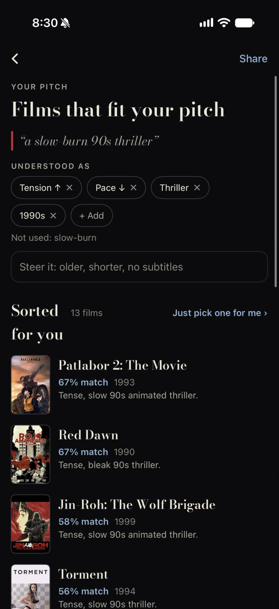

The owner: "redesign/mock pitch screen slightly please." A light touch on the results screen, not a new feature set. Two variants at 390pt, each in four states: the top of results, scrolled with the pinned bar, "+ Add" open, and editing the pitch. Both carry the changes already approved or building (filled chosen chips, tap the sentence or the pencil to edit, a quiet Start over, the share circle, Bodoni roman, the Soft claw loader) and show the proposals: the pinned compact bar, the faint grained backdrop, a compact "+ Add", an optional place chip, and a tidier hierarchy. Drawn from origin/main Recut.tsx and Recut.swift. Mock only, no app code.

.chip.on, rule at globals 13637), so the reading reads as chosen and + Add as not yet.Same order as today, so nothing has to be relearned: sentence, Understood as, chips, steer, Sorted for you, rows. The frames go; spacing does the grouping.
Three groups, three gaps: the sentence (14 under the header), the reading (chips and steer 10 apart, one block), the list (26 above Sorted for you).
Just pick one for me becomes a quiet ghost pill with the ticket, ink words, still on the count's line, so the only blue on the meta line is the matches below.
+ Add opens inline: each strand once with a small ↑ and ↓, in two groups. 18 chips become 9.
The faint grained backdrop of the top pick (It Follows) behind the header only, dm-card-v4 A's treatment: grey, dim, grained, fading into the panel by the chips. New York is the proposed place chip (dashed ring), with the pin glyph; until the parser reads places, the line stays "Not used: New York feeling".
The drawer's top edge once Sorted for you scrolls under it: the sentence on one line with its red bar and pencil (tap to edit), share and ×, then the chips as one sideways row ending in + Add. A shadow under it, never a rule. The backdrop has faded out by now.
Each strand once, the five already chosen left out (they are the chips above). Tap ↑ for more of it, ↓ for less; it becomes a filled chip at once and the list re-ranks (no pitch spent). Grouped as Mood and Scale and look. + Add shows it is open; tapping it again closes.
Tap the sentence or the pencil: the sentence becomes the ask's box where it stood, caret at the end, the mic inside. Pitch it (cream) and Cancel, the free line under them. The reading and list dim. Pitch it spends a pitch and runs the Soft claw loader.
Bolder: the sentence is bigger (Bodoni 26) as the screen's title, and the chips are one sideways row from the start, + first. Scrolling only shrinks the sentence to one line; the row itself just sticks.
Gains: the films start about 90pt higher (four rows above the fold, not three), and top and scrolled are visibly one thing.
Costs: two of seven chips sit off screen, so "what did it understand?" needs a swipe; Understood as is gone.
+ Add is a drawer over Pitch: all 14 strands once, each with More and Less, the chosen ones already set, grouped in three.
The backdrop is taller and sits behind the bigger sentence. The steer field is a pill under the row with a return glyph. Same quiet pick pill and rows as A.
The same row, stuck, the sentence at one line. Identical to A's bar except + leads the row (so it is never scrolled away). The steer field scrolls away with the header; Steer it stays reachable from +.
Every strand once, with More and Less: chosen ones show set (Scary More), so this is also where a direction flips. Grouped as Mood, Edge, Mind and eye. Done is swiping down; each tap re-ranks behind it. Its title has no dash: Pitch's red bar is still on screen.
Tapping the bar's sentence opens the box in the bar itself, without scrolling to the top: the box with the mic, Pitch it and Cancel, the free line. The chip row and list dim under it. The same edit as A, from wherever you are in the list.
It is what "slightly" asks for. Same order, same rows, same words; what changes is that chosen chips look chosen, the frames go, the spacing groups things, and the pitch stays with you as you scroll.
The pinned bar and the compact + Add are the two real wins and A has both. The bar is the one new component; it is the same bar B would use, so nothing is lost by choosing A.
Take from B only if the owner wants more films above the fold: B's one-row header gains about 90pt but hides two chips. Its strand drawer is the fallback if the inline list ever outgrows the screen (it will not at 14 strands).
Place chips ("New York") are drawn as proposed in both; they need the parser to read a place, so they ship later or not at all. Until then the "Not used" line stays.
| Header | 20 from the drawer top; caps left; Start over, share 36, × 36 right, 10 apart |
| Sentence | 14 under the header; Bodoni 500 22/1.25, red bar 3, 13 to the words; pencil 15, faint, after the last word |
| Understood as | 18 above, 8 under; chips 34 tall, 8 apart |
| Steer it | 10 under the chips (was 12 plus a frame); filled #1D1D21, no outline, 44 tall, radius 12 |
| Sorted for you | 26 above; count left, pick pill 32 right, both on one line |
| Rows | unchanged: 9 above and below, poster 56 by 84, 12 to the words |
| Pinned bar | 20 top (grab bar), sentence 17 on one line, circles 32; chips 32 tall, 10 under; 12 bottom; shadow 22, no rule |
| Backdrop | 250 tall behind the header, the top pick, 0 opacity by the time Sorted for you reaches the bar |
.recut-chip in the answer gets the shared on style; iPhone Theme.accentSoft fill and Theme.accent stroke. The add list keeps the outline.addableDials returns each label once ({ label, name }); the chip carries two 26pt arrow buttons (44pt tap area with the chip's height). Groups are a static map in lib/recut.ts.position: sticky head inside the drawer's scroller shown once .recut-sorted passes it (IntersectionObserver); iPhone, a safeAreaInset(edge: .top) driven by the scroll offset. The chip row is the same chips in an overflow-x: auto / horizontal ScrollView.--panel-2 fill; move it into the chips' block (8 to 10 under).